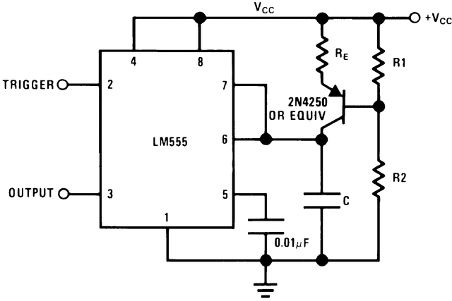
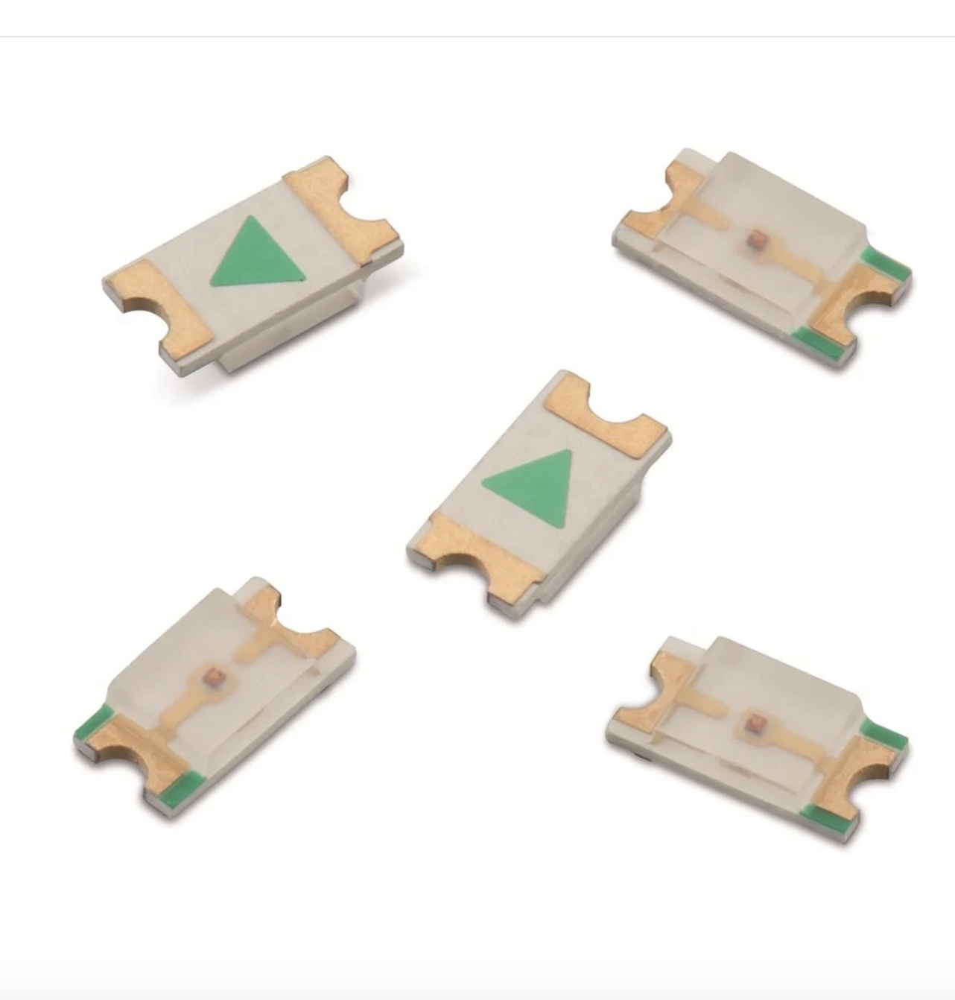
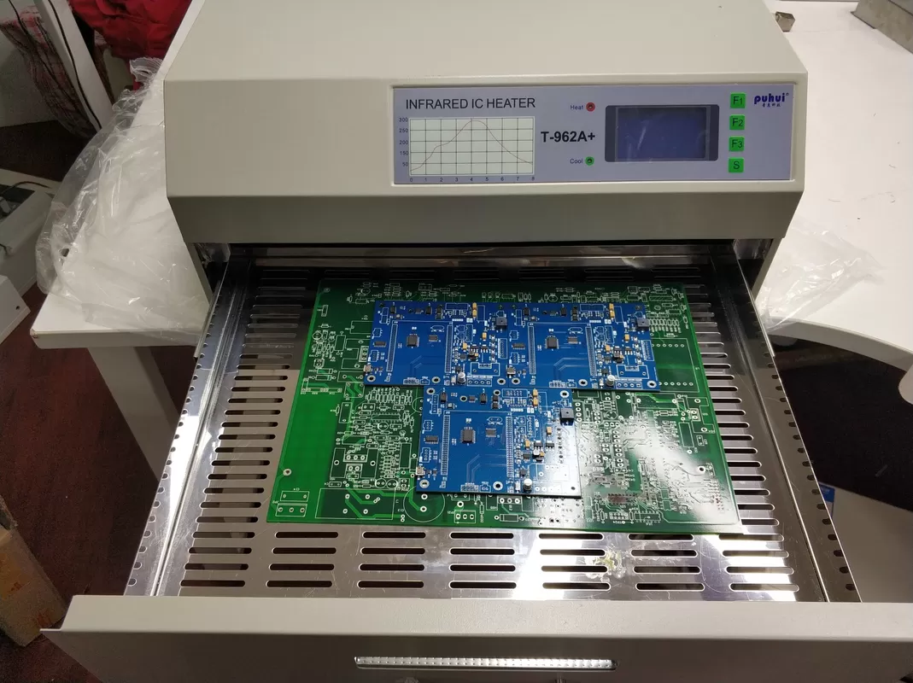
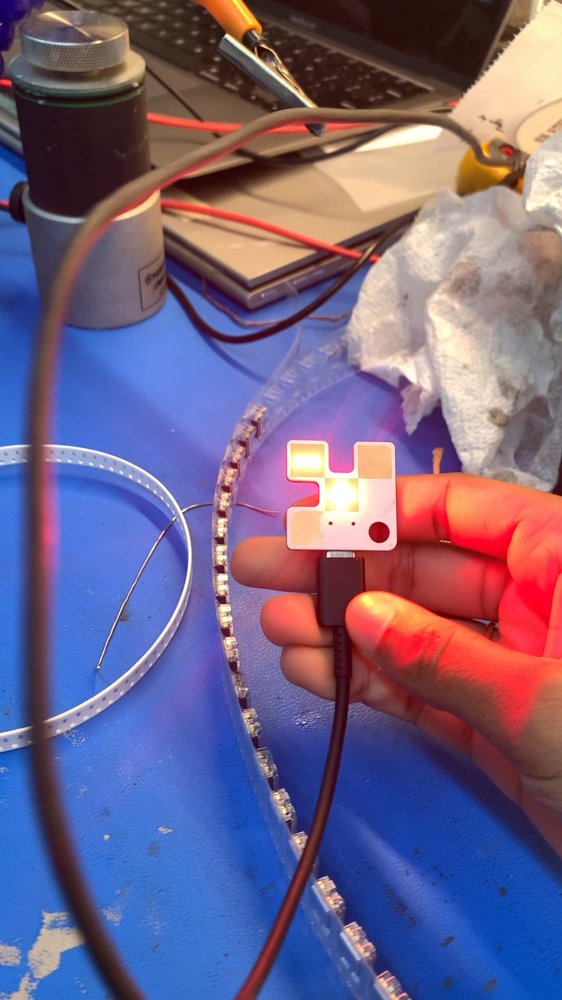

Designing a PCB for an LM555 timer keychain involves creating a small circuit that incorporates the LM555 timer IC along with other components necessary for the keychain's operation.
Used a schematic capture tool (Eagle) to design the circuit. Placed the LM555 timer IC on the schematic, and connected it to other components such as resistors, capacitors, and LEDs as per your design requirements all on the software. Below is an example of the schematic.
Next is the assembly of components onto the PCB according to the assembly drawings. Components must be properly soldered with the help of tools such as flux. Below is an example of the LED components that were used. The arrows must be pointed away from the center.
Next, the keychain must be placed in an infrared oven for proper setting of the solder.
Finally, the capacitors and resistors must be hand-soldered on the back of the keychain. It can be plugged into a USB-C charger to achieve this lighting effect
